Томаторо — ИИ-помощник в фокусировке по методу Помодоро
Пообещать себе «сейчас доделаю» легко. Удержать фокус, когда никто не смотрит, — почти невозможно
ИИ сопровождает работу над задачей: замечает отвлечения, отслеживает прогресс и мягко возвращает к цели — эффект внешнего контроля, как будто напарник работает рядом
Работа ИИ-помощника построена не просто так, а внутри фреймворка тайм-менеджмента Помодоро
Геймификация позволяет усилить вовлечённость и мотивацию пользователей, а также повысить эффекты от сервиса в целом на жизнь пользователей
Работа переехала домой, а дисциплина осталась в офисе.
В офисе рядом были коллеги: они видели, что вы полчаса сидели в ютубе или телеграмме и недовольно зыркали, шепчась за спиной. Руководитель подходил спросить, как задача — или просто ходил мимо как бы невзначай, поглядывая на экран вашего монитора. Иногда это бесило, но именно это внешнее внимание дисциплинирует.
Дома никого нет. Пошёл проверить уведомления на минуту, и завис на три часа в соцсетях. День формально закрыт: с 10 до 19 вы «были на работе». А по факту за это время получилось 2–3 часа настоящей работы — остальные часы ушли на мессенджер, видео, и перерывы, которые незаметно становятся длинными.
Это знакомо каждому, кто работает без коллег рядом. Психологи могут сколько угодно рассказывать про необходимость воспитывать внутреннего взрослого, на практике этот внутренний взрослый — мудрый и дисциплинированный сам по себе, без надзора — остаётся просто мечтой.
столько реальной работы остаётся в дне удалёнщика
Классика Помодоро: ставишь 25 минут и работаешь. Проблема в том, что таймер не видит, чем вы заняты. Ушли в соцсети на 40 минут — он всё равно оттикает до конца и решит, что сессия удалась.
Слабое место метода: он целиком держится на вашей дисциплине. Но метод нужен именно тогда, когда её не хватает, а он добавляет нагрузки, требует запускать таймер, следить самому за собой.
Вторая слабость метода: работать по таймеру в одиночку скучно. Не случайно взлетел виртуальный коворкинг Focusmate — сайт, где вас сажают в видеозвонок с незнакомцем, чтобы «работать рядом» с ним. Работает не минутомер, а присутствие других людей. Но камера, следящая за тобой, и чужое расписание подходят не всем.
Tomatoro берёт метод Помодоро целиком — таймер, задачи, перерывы между спринтами — и добавляет в него напарника
Базовый таймер бесплатен и работает без ИИ: это полноценный рабочий инструмент, который приучает пользователя к методу, на котором построены более продвинутые функции с ИИ.
Утром Томаторо спросит пользователя о задачах на день, а пользователь распределит их по спринтам и помодоро. Какие вкладки считать рабочими, Томаторо уже знает. Со стартом первого спринта начинается цикл помодоро.
Ушли с вкладки — расширение это видит. Через 4 минуты Томаторо, в веб-кабинете маскот персонаж-помидор, сам присылает уведомление:
«Пропал на 4 минуты. Задача ждёт: „Надо написать три абзаца статьи“. Продолжаем?»
Возвращаться, чтобы получить оклик, не нужно. Не среагировали — через 8 минут тон сменится на грустный, через 12 — на обиженный, но тёплый. Ругаться он не умеет и наказывать не станет.
🔒 Приватность. За пользователем никто не следит: расширение не видит, куда ушёл пользователь — YouTube или банковское приложение, для Томаторо это просто «отсутствовал 6 минут».
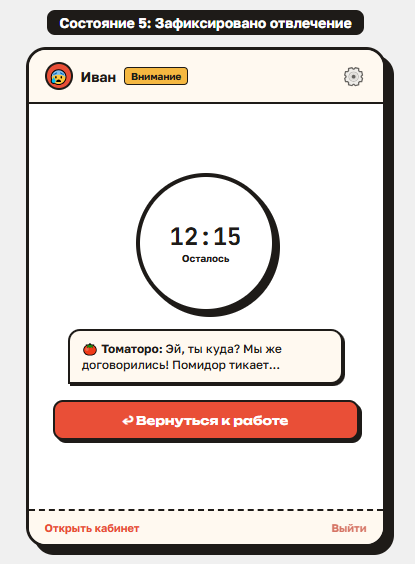
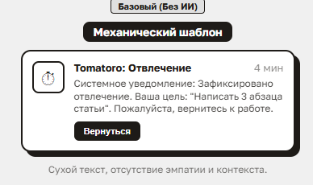
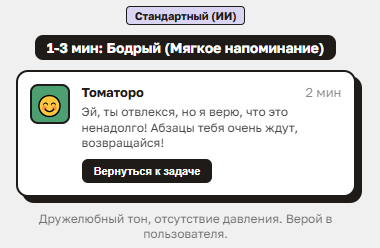
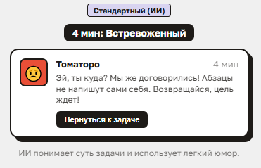
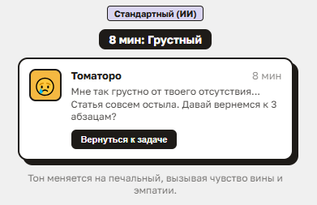
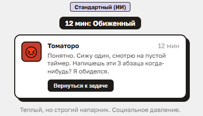
Утро. Открываете кабинет — Томаторо спрашивает, что в фокусе сегодня. Выбираете 2–7 задач; на платном тарифе ИИ сам предложит черновик по вчерашним итогам.
День. Рабочее время собирается из помодоро, помодоро — из спринтов по 25 минут. Задачу кликом назначаете целью спринта; планы поменялись — переносите задачи между спринтами.
Всё это видно на таймлайне дня: спринты, перерывы, длинный отдых — что завершено, что впереди.
Вечер. Итоги дня: план против факта, сколько спринтов прошли успешно, где увязли. ИИ добавляет короткий совет на завтра. Невыполненное переносится на завтра одной кнопкой.
⚙️ Всё настраивается. Все параметры, длительность спринтов, перерывов, задачи — настраиваются и редактируются.
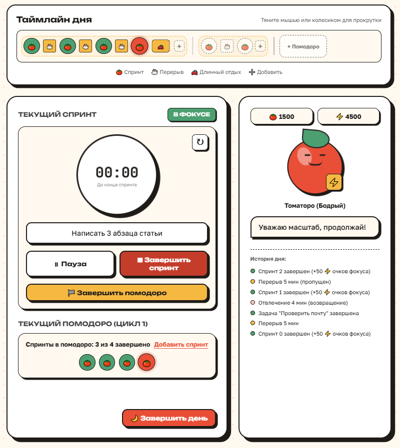
🌳 Forest — популярный таймер-игра: посадил дерево на время работы, ушёл из приложения — дерево погибло. Механика наказания стала главным предметом жалоб: пользователи бросали приложение, обидно терять результат из-за одного срыва.
🎥 Focusmate давит другим способом: камера незнакомца и чужое расписание. Мы исходим из другого принципа: срыв — это момент, когда человеку нужна поддержка, а не наказание и скандал.
«Наказание за срыв теряет пользователя ровно в тот момент, когда ему нужно вернуться. У конкурента наказание — мёртвое дерево. У нас — напарник, который грустит, и очки, которые всё равно начисляются. Это принципиальный выбор продукта, и он подтверждён жалобами пользователей конкурентов.»
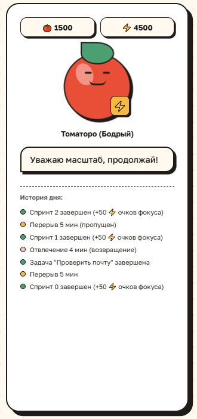
Мотивирующий график. Аналитика показывает «Динамику фокуса»: кривая факта колеблется по дням, но поверх идёт штриховая линия тренда — она растёт. Подпись на графике: «Ты прогрессируешь, даже если были провалы». Пользователь видит рост, а не журнал ошибок.
Напарник грустит, а не злится. Тон реплик прописан в промптах ИИ: бодрый → грустный → обиженный, но тёплый. Никогда нет агрессии.
Цвета без стресса. Таймер при отвлечении — горчичный, не красный. Красный — только для системных ошибок. Срыв пользователя — не ошибка системы.
Честные баллы. Спринт с возвращениями засчитывается в очки — за то, что вернулся и доделал. Итоги дня: «план против факта» без осуждения, один совет вместо нотаций, угроз и прививания чувств вины за увядшее дерево.
Управление в руках пользователя. Настроить строгость, паузу, «честный перерыв» вместо спринта — выбор всегда за человеком.
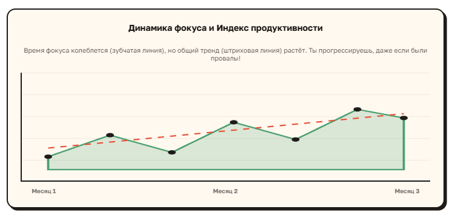
📈 Штриховая линия тренда растёт поверх колебаний — пользователь видит рост, а не журнал ошибок.
В сервисе есть две внутренние валюты — помидорки и очки фокуса — и уровни.
Позволяют снижать стоимость платного тарифа вплоть до нуля. Получаются по итогам дня без единого провала спринта.
Позволяют влиять на настроение ИИ-напарника, прокачивать уровни и покупать помидорки. Получаются понемногу за каждый маленький успех.
🏆 Уровни. Каждый уровень даёт бонус к росту очков фокуса. При системных срывах уровни могут понижаться. 🔥 Стрик — дни фокуса подряд. Разорвать жалко, продолжить приятно.
Геймификация возвращает пользователя каждый день и мотивирует улучшать свои результаты. Активный пользователь может поддерживать платный уровень подписки бесплатно (на время активного роста сервиса как часть маркетинга). Пользователь работает над собой, а сервис получает рост вовлечения, виральность и лояльность пользователей.
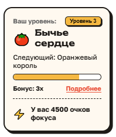
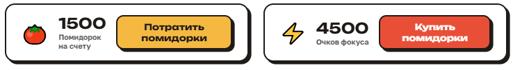
Рабочий день с Tomatoro:
обращений на активного пользователя в день (наша гипотеза, требует проверки на метриках). Плотный день с 6 спринтами даёт верх диапазона.
🎯 Удержание — на геймификации: уровни со сползанием и стрик дают причину открыть Tomatoro завтра.
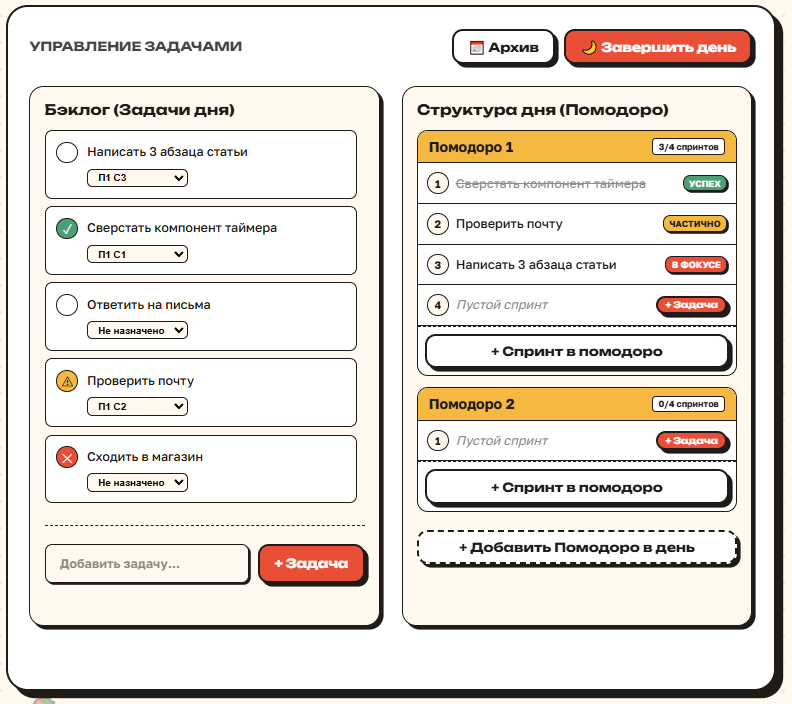
Бесплатно и навсегда — полный метод Помодоро: таймер с настраиваемой длиной спринтов, задачи дня, контроль 3 рабочих вкладок, напоминание при отвлечении, статистика. Без ограничений по времени.
Тот же таймер с логикой Помодоро, но также ИИ-напарник:
Оплата: рублями (ЮKassa) или заслуженными помидорками. Черновая цена на MVP: 300 ₽/мес или 3000 Помидорок.
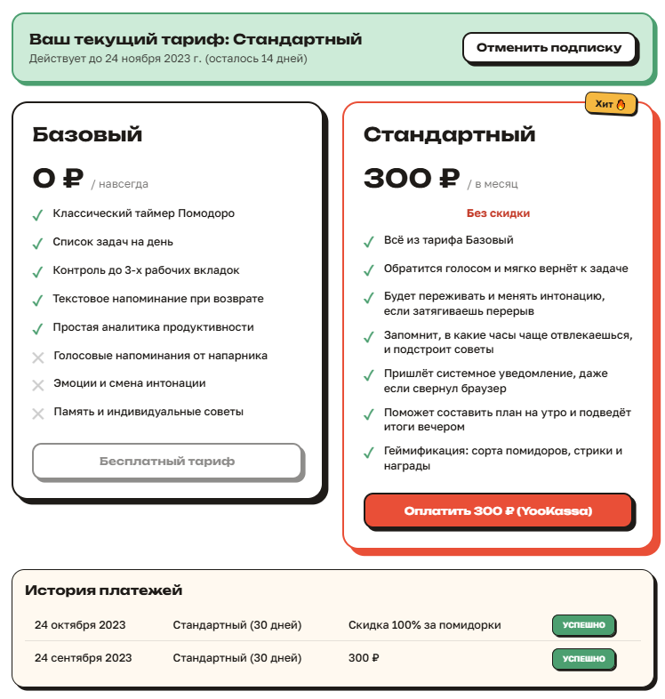
Приоритетная аудитория — люди, которые работают из дома:
Работники умственного труда — писатели, журналисты, блогеры, учёные, психологи, художники, музыканты, то есть люди с более свободным графиком, которые имеют больше независимости в работе без формального статуса фрилансера или самозанятости.
Объём: ~74 млн занятых в РФ Росстат; 10–15% регулярно на удалёнке или гибриде опросы hh.ru/РАНХиГС, оценка = 7–11 млн. Самозанятых — 12+ млн ФНС, оценка. Вторичные сегменты: студенты (~5 млн), люди с чертами СДВГ.
Аудитория — те, кто работает без коллег рядом: это 7–11 млн человек в России.
И эти люди уже платят за попытку сфокусироваться на работе — коворкингам в 10–20 раз дороже нашей подписки.
💸 За фокус они уже платят: коворкингам, коучингу, Focusmate Plus и другим тайм-трекерам.
Forest — таймер-игра: ушёл из приложения — «дерево умерло». Построен на идее наказания, что провоцирует стресс у пользователей, отчего с него большой отток.
Focusmate — сайт видеозвонков «работаю рядом» с незнакомцем: чужой человек следит через камеру, нужно подстраиваться под чужое расписание.
Focus To-Do, Pomofocus — есть таймер и статистика, но требует от пользователя дисциплины для управления приложением, которой у того нет.
Session — только Apple
RuStore-таймеры — без ИИ, без памяти и адаптации под пользователя
Физические коворкинги — у них рабочее место арендуют ради эффекта «вокруг работают люди». Итог: шум в офисе, траты времени на дорогу, нестабильный интернет — и цена в 10–20 раз выше подписки за наш сервис. Открытые ИИ-напарники (Anchor и др.) — для гиков-энтузиастов: свой сервер, свои ключи, без техподдержки.
Прямые конкуренты либо молча тикают, ожидая, что неспособный взять себя в руки пользователь возьмёт себя в руки, либо наказывают и устраивают скандалы. Косвенные конкуренты — это коворкинги, продают тот же эффект «кто-то рядом», но с шумом на рабочем месте, тратами на дорогу и в 10–20 раз дороже.
✓ Ниша русскоязычного Помодоро с ИИ-напарником в РФ свободна.
Веб-кабинет (Next.js) + расширение браузера (Manifest V3, WXT). Расширение сравнивает домен локально: на сервер уходит только факт ухода — без URL. Ни экрана, ни камеры, ни чтения страниц.
FastAPI, машина состояний спринта/помодоро/дня, PostgreSQL (Supabase, RLS). Генерация ИИ — через очередь Celery + Redis: не блокирует других пользователей.
Озвучка — SaluteSpeech (Сбер), аудио стримится и не хранится. Уведомления — Web Push. Платежи — ЮKassa. Серверы в РФ.
GigaChat (основная, токены организаторов) → YandexGPT (резерв) → статический словарь (fallback за 5 сек)
152-ФЗ: экспорт данных и удаление аккаунта встроены в продукт.
Масштабирование: до 10 000+ DAU горизонтально (Redis Pub/Sub).
30 CustDev-интервью; каркас веб-кабинета (авторизация, таймер).
Расширение с детекцией ухода, ИИ-вмешательство (GigaChat + SaluteSpeech), Web Push, биллинг → MVP, закрытая бета.
Геймификация, итоги дня, память-лайт; админка с промокодами для тестировщиков.
Публичный запуск в открытом контуре; GTM: Telegram-чаты удалёнщиков, VC.ru, Habr, VK; 70+ тестировщиков.
Итерации по метрикам, рост к 1000 DAU.
Реплики возвращения с эскалацией тона, черновик утреннего плана, итоги дня, поздравления за идеальный день.
Паттерны считает бэкенд (SQL); при сбое — статические фразы, сессия не прерывается.
Системный анализ доведён до ER-модели, API-контрактов и промптов — строим по готовой спецификации.
К десятой неделе — 70 тестировщиков и открытый контур, как требует программа.
Дальше — метрики и рост к 1000 DAU.
Обсудим продукт, метрики и участие в программе — пишите или звоните.